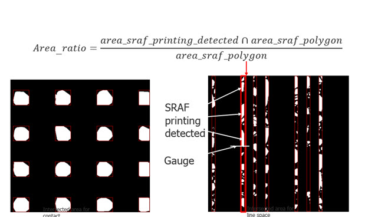
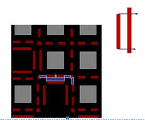
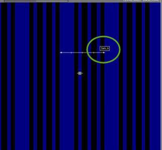
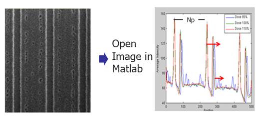
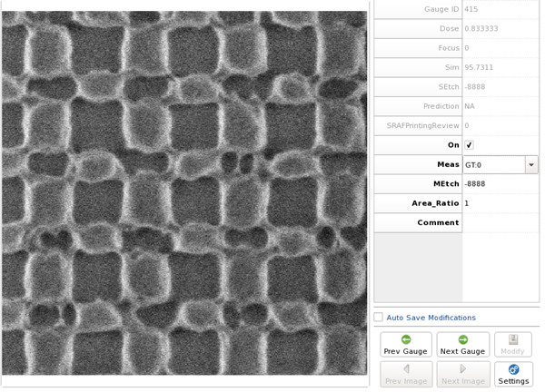
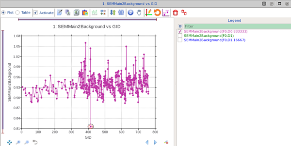
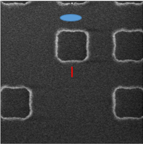

SRAF gauge files can optionally be created
using a set of SEM images that correspond to the gauges in the test
pattern file.
The createsrafgauges command
processes SEM images to determine if an SRAF prints or not by following
these general steps:
Segment
a SEM image into regions.
In the
2017.3 release, a watershed algorithm is used to find similar regions.
This is the default method (the segmentation_method 2 argument).
Previous releases
used an edge extraction algorithm. You can revert to this mode by
setting segmentation_method 1 in the createsrafgauges input file.
Align the regions
with the drawn shapes in the layout.
If segmentation_method 1 is enabled, edges are aligned instead.
Determine if
groups of pixels near SRAFs (also known as SRAF blobs) print by
examining a blob’s area and image contrast.
The command produces two types of results:
It identifies
borderline images that require inspection by setting a value of
“1” in the SRAFPrintingReview column in the gauge output file.
It calculates
a metric called the “area_ratio” for an SRAF, using the following
formula:
area_ratio = N*Δ2/Width*Length
where N is
the number of pixels inside the SRAF polygon and Δ is the pixel
size.
The area ratio indicates the fraction of SEM image pixels that
fall within an SRAF polygon. If there was no SRAF printing, the
area ratio is zero. A fully printed SRAF has an area ratio of 1
or greater. The “area_ratio_threshold” parameter can optionally
be used to set the boundary for printing or non-printing.
When using the area_ratio_threshold option,
printing along the entire area of the SRAF is used to decide if
an SRAF prints or not and is incorporated into a gauge centered
on the SRAF polygon. This averages out random printing effects.

Print detection between SRAFs is also supported
up to a specified distance. The default is 50 nm.

Because the optimal createsrafgauges settings
can vary from case to case, you should tune the createsrafgauges
settings using the following flow:
Filter the gauges by running createsrafgauges
once using the default settings and removing outliers.
Select a training set of images (if available,
approximately 100 images) to identify the optimal createsrafgauges
settings.
Choose a random set of the filtered gauges that
includes all three Meas field categories (LT:0, GT:0, and ForReview).
Using the SEM Image Viewer, manually classify
the training set of images into the three Meas field categories.
Test different settings by running createsrafgauges
on the training set. Test the settings segmentation_method 2 with
use_rof_filter false, segmentation_method 2 with use_rof_filter
true, and segmentation_method 1. For each set of settings, compare the
createsrafgauges results to the manual classification and select
the set of settings that produced the best match.
With the optimal settings, run createsrafgauges
on the full set of filtered gauges.
Prerequisites
A layout
file containing test patterns with SRAFs on a separate layer
A prepared
SRAF gauge input file (gauges centered on the SRAFs or on main features,
and “Meas” field should be empty)
The related
SEM image files and SEM pixel size (nm/pixel)
Calibre WORKbench
and Calibre nmModelflow invoked
Procedure
- In your
preferred text editor, create a setup file with the parameter values
described in the createsrafgauges reference
page. Some best practice settings include:
Estimating
the sem_pixel_size parameter can be done using the ruler function
in Calibre WORKbench to average along the line dimensions.
Select
a gauge and use the ruler to measure the period in Calibre WORKbench.
For example, in this image, the ruler shows 349.9 nm.

Open the corresponding
SEM image file in MATLAB, Python OpenCV, PIL imaging packages, or
similar program. The image is stored as a matrix of NxN pixels (points),
usually 500-700 by 500-700. Count the number of pixels between large
peaks (Np in the figure is 100 pixels).

Calculate the
ratio using the formula gauge period/number of pixels. In this case,
sem_pixel_size is 349.9/100 = 3.49 nm/pixel.
Setting the
max_alignment_error_x and max_alignment_error_y parameters allows
you to adjust for misalignment tolerances intrinsic to your SEM tool.
The default values are 200 nm, which are usually sufficient.
Having 5 or
more sets of gauges containing through-dose information allows you
to set the consistency_check option, which can result in more reliable results.
Setting the
add_new_gauges parameter to “true” adds extra gauges to the output
related to printing issues. Setting it to “false” moves the output
gauge to the SRAF of the largest area_ratio, which can be used to
create a set of verification gauges.
Setting the populate_area_ratio parameter to “true”
computes the area ratio for SRAF patterns from SEM images and writes
it to the Area_Ratio column in the output gauge file.
Setting the populate_blob_features parameter
to “true” computes the blob area, blob contrast, and blob mean for
SRAF patterns from SEM images and writes the values to the output
gauge file using the same names.
Setting the populate_sem_main2background parameter
to “true” computes the ratio of average pixel intensities of the
main pattern and non-main pattern regions for SRAF patterns from
SEM images and writes it to the SEMMain2Background column in the
output gauge file.
Figure 1. SEM Image
Showing Heavy SRAF Printing in nmModelflow
Figure 2. SEMMain2Background
Plot Corresponding to Heavy SRAF Printing in nmModeflow 
Setting the
use_all_srafs_blob parameter to “true” detects printing across the
entire image instead of just at the SRAF where the gauge is located.
A typical setup file would look similar to
the following code:
version 1.0
sem_images_base_path ./SRAF_Images/
sem_pixel_size 1.303
main_pattern_layer 2
assist_feature_layer 4 SRAF
stats_file stats_18.4.csv
add_new_gauges false
consistency_check true
dump_processed_image true
populate_area_ratio true
populate_blob_features false
populate_sem_main2background false
gauge_center sraf
use_all_srafs_blob true
segmentation_method 2
use_rof_filter false
processed_image_path ./processed_Images/
layout_masked_image_path ./masked_Images/
- In the
Calibre WORKbench console window, run the createsrafgauges command
with the setup file. The -remote parameter is optional, and is used
only if you have a distributed processing configuration available.
calibrewb -remote remotefile.txt -a createsrafgauges -l layoutfile
-i gauge_file -o output_gauge_file -s setupfile
Calibre WORKbench creates an SRAF gauge output file with the
Area_Ratio field filled in with a status of GT:0 (printing) or LT:0
(not printing). This file can now be used for SRAF calibration.
- Open the
output gauge file in Calibre nmModelflow. Inspect any images that
have gauges with the following characteristics:
A
value of 1 in the gauge’s SRAFPrintingReview column indicates that
the print result shows a borderline image at the gauge location.
Tip Clicking on the link in
the SEM, SEMProcessed, or SEMLayoutMasked columns opens up the SEM
Image Viewer, where you can inspect the gauge placement on the image,
and change the Meas result if needed.
A value of
-1.0 in the gauge’s Area Ratio column and a -1 in the Meas column
indicates a possible misalignment.
A SEMMain2Background value that is significantly
different from values for a group of SEM images could indicate an
outlier that must be filtered.
Adjust gauges and Meas settings as needed. The decision to override
the measurement should be based on a visual inspection of the gauge
placement versus the nearest printing SRAF blob.
For example, in the following image, the gauge (red) returned
a result of LT:0 (a not printing result) but the nearest SRAF blob
(blue) does not have a marker.

In this case, there are multiple ways to handle this result:
Leave the
gauge as is
Move the gauge
to the printing SRAF and set the Meas field to GT:0 (a printing
result)
Add a new gauge
centered on the SRAF, and set the new gauge’s Meas field to GT:0
Results
Use the modified gauge file for calibration in Calibre nmModelflow.
The results of a createsrafgauges run cannot be used in CM1 Center.